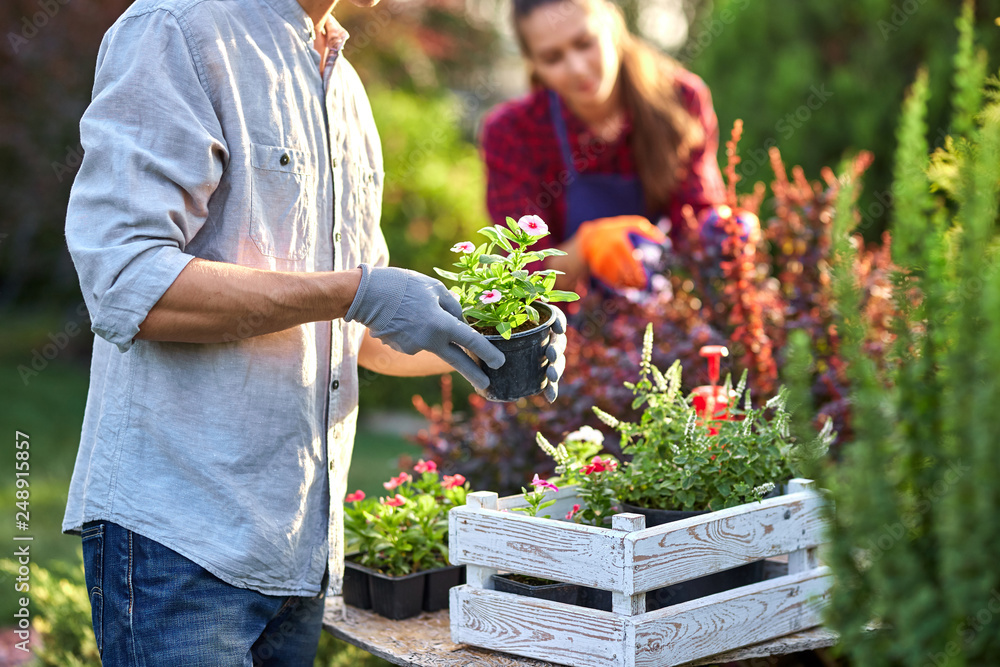

Planting Windows
Light Requirements
I started painting as a hobby when I was little. I didn't know I had
any talent. I believe talent is just a pursued interest. Anybody can
do what I do. Just go back and put one little more happy tree in
there. Everybody's different. Trees are different. Let them all be
individuals. We'll put some happy little leaves here and there. These
things happen automatically. All you have to do is just let them
happen. Everyone wants to enjoy the good parts - but you have to build
the framework first. Let's do that again. I'm gonna start with a
little Alizarin crimson and a touch of Prussian blue. The very fact
that you're aware of suffering is enough reason to be overjoyed that
you're alive and can experience it. If you do too much it's going to
lose its effectiveness. If you don't think every day is a good day -
try missing a few. You'll see. In life you need colors. Fluff it up a
little and hypnotize it. We can fix anything. Automatically, all of
these beautiful, beautiful things will happen. There we go. Look at
them little rascals.
